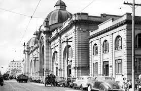
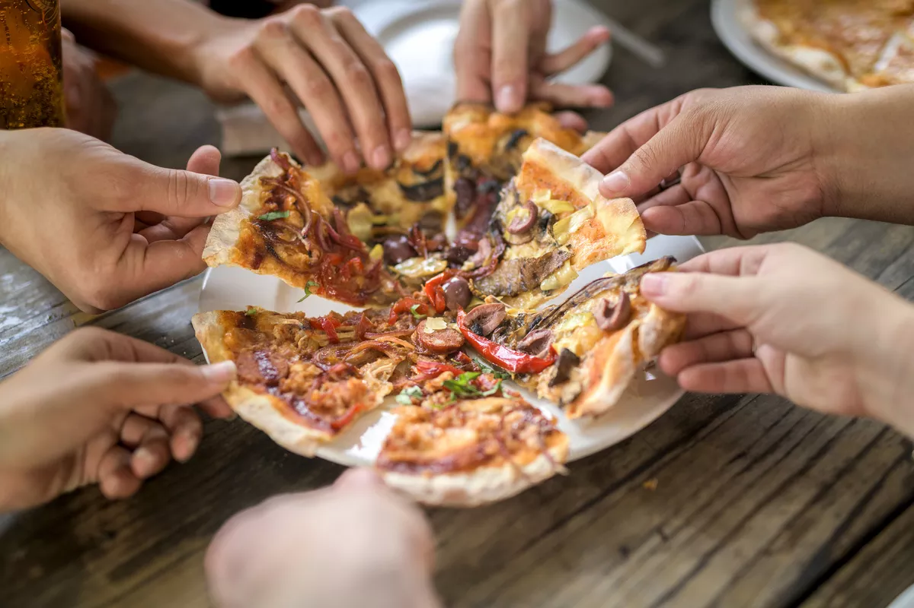

Curiosidades

Mercado Municipal de São Paulo na revolução
O Mercado Municipal de São Paulo foi usado durante a revolução de 1932 por soldados para treinamentos de tiro ao alvo.

Paulistanos consomem 1 milhão de pizzas por dia
Segundo dados do São Paulo Convention & Visitors Bureau, São Paulo é considerada a segunda cidade que mais consome pizzas no mundo, somando mais de 700 pizzas por minuto.

São Paulo já teve um rinoceronte como vereador
Em 1959 os paulistanos estavam extremamente descontentes com os candidatos a vereadores, por isso elegeram um rinoceronte chamado “Cacareco”. Naquela época as eleições eram feitas manualmente e o animal recebeu aproximadamente 100 mil votos para o cargo.